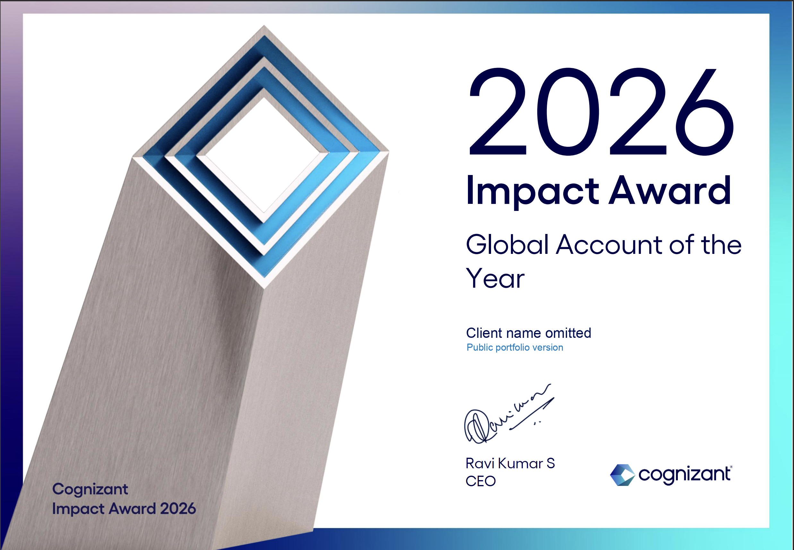
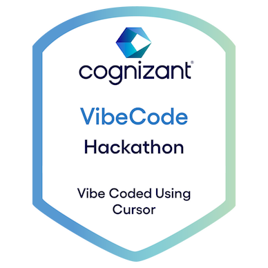

Data and AI engineering, shipped with evidence.
I build practical AI systems: retrieval tools over enterprise data, production data pipelines, local LLM workflows, and open-source utilities that turn messy context into structured execution.
__ __ ___ _ _ _ __ __ _ ____
| \/ |/ _ \| | | | / \ | \/ | / \ | _ \
| |\/| | | | | |_| | / _ \ | |\/| | / _ \ | | | |
| | | | |_| | _ |/ ___ \| | | |/ ___ \| |_| |
|_| |_|\___/|_| |_/_/ \_\_| |_/_/ \_\____/
user Mohamad Kanso
role Python, Data and AI Engineer
origin London, UK
current Cognizant - Artificial Intelligence and Analytics
focus LLM applications, AI agents, RAG, data pipelines, automation
impact 40% data-latency reduction across 50M-record Databricks pipelines
stack Python, SQL, FastAPI, LangGraph, PySpark, Databricks, Azure, React
I build practical AI systems: retrieval tools over enterprise data, production data pipelines, local LLM workflows, and open-source utilities that turn messy context into structured execution.
Built RAG-based enterprise search and Q&A prototypes with metadata-aware chunking, embeddings, vector search, source grounding, access controls, and retrieval evaluation.
Designed MCP-style AI assistant prototypes over structured data using FastAPI, approved tool calls, RBAC, PostgreSQL, Redis, structured outputs, and traceability.
Improved ADF-to-Databricks pipelines for public-sector workloads, adding retry logic and observability to cut data latency by 40% across 50M-record datasets.
Built MurmurX, a fully local voice-first AI pipeline using WebRTC VAD, Whisper.cpp, Qwen 2.5 3B, and TTS for sub-2-second local inference with zero cloud dependency.
Developed ML and time-series models across Ethereum, Bitcoin, and Nasdaq data with indicators, walk-forward validation, and error analysis.
Selected from CV and public GitHub repositories.
Open-source workflow intelligence engine that turns operational inputs into workflow maps, bottleneck analysis, Mermaid diagrams, and ranked automation opportunities.
Transcript safety layer that classifies voice assistant input as SAFE, REDACT, REVIEW, or BLOCK before it reaches an LLM, with browser recording and CLI support.
Local AI code review and auto-fix platform for scanning codebases, caching review results, exporting Markdown reports, and integrating GitHub Actions checks.
Six-agent analyst briefing pipeline using LangGraph, typed facts, evidence indexing, risk scoring, sentiment analysis, Plotly, and deterministic demo fallback.
Synthetic incident bundles and RCA scoring for benchmarking AI SRE agents across alerts, metrics, logs, traces, runbooks, and ground truth.
Self-hosted AI workspace for local agent workflows and private engineering productivity.
Fully local voice-driven AI pipeline covering audio capture, speech-to-text, local LLM inference, and text-to-speech with zero cloud dependency.
First-class dissertation project building an automated Bitcoin trading bot with LSTM models, technical indicators, backtesting, exploratory analysis, and live-trading tests.
Private MCP/RBAC tool-use prototype over structured enterprise data with approved tools, SSO-style roles, PostgreSQL retrieval, Redis traces, and human-review controls.
Direct hosted links are surfaced first where the public repo exposes a working page.
Loaded from public repository metadata. Rows show repository and hosted HTML links when available.
Certificates and recognitions supplied for the portfolio. Client-sensitive details are omitted in public assets.

Global Account of the Year recognition. The public image omits client-name details.
Participated in Cognizant's online generative AI hackathon title attempt.
View certificate
VibeCode Hackathon recognition for building with Cursor during Cognizant's AI coding initiative.
Recognition for keeping colleagues informed, supporting peers, and contributing strongly to team delivery.
CV-listed academic recognition alongside first-class performance in Computer Vision.
Mathematics recognition supporting the quantitative foundation behind applied ML and data science work.
Python, Data and AI Engineer with Cognizant experience across RAG enterprise search, LLM-backed automation workflows, production data pipelines, and local LLM systems.
download_latest_cvMSci Data Science, City, University of London. Upper Second Class Honours with first-class performance in Mathematics and Applied Machine Learning modules.
Dissertation: Time-Series ML System for Financial Market Data, first-class mark, 76%.
open_dissertation_pdf